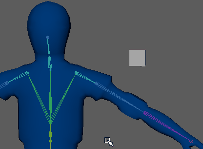

可以在平滑蒙皮几何体处于任何姿势的情况下为其添加对象，以创建效果。

但是，在平滑蒙皮几何体不处于和处于绑定姿势时添加影响对象产生的结果略有不同。例如，如果向不处于绑定姿势的几何体添加影响对象，则放置影响对象的位置可能会发生某些变形，因为该区域中的权重会重新分布。
添加影响对象
- 确定影响对象的位置。
- 选择您希望对象影响的蒙皮或蒙皮对象（例如，NURBS 曲面）。
- 选择影响对象。
- 选择“蒙皮 > 编辑影响 > 添加影响”(Skin > Edit Influences > Add Influences) >
 。
。
- 在“编辑影响”(Edit Influences)菜单中设置“添加影响选项”(Add Influence options)，然后单击“添加”(Add)。